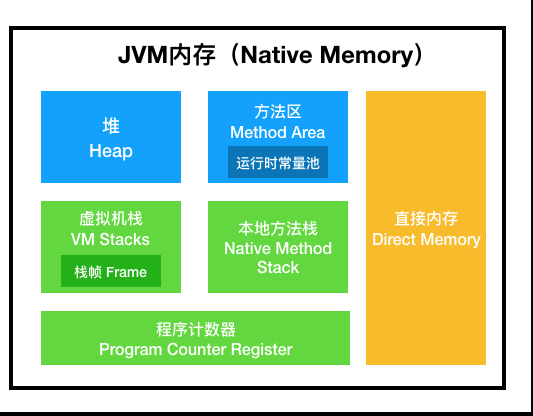

JvmMemory
jvm的内存结构
- java堆
- 方法区
- 常量池
- PC寄存器
- java虚拟机栈
- 本地方法栈
公有部分（Java堆、方法区、常量池）
-
java堆 1.jvm中分配一块用来专门存储对象实例。几乎所有的实例对象都分配在堆中。还有一小部分在栈中分配。 2.堆的垃圾回收机制，由两代区实现，young generation，old generation
垃圾回收算法连接 -
方法区（jdk1.7采用永久代的定义来实现方法去，jdk1.8之后采用MetaSpace定义来实现方法区） 方法区中主要存储了类加载的时候Java 类字节码数据的一块区域，它存储了每一个类的结构信息，例如运行时常量池、字段和方法数据、构造方法等。
注意：（1）常量池：运行时常量池是方法区的一部分。
Class 文件中除了有类的版本、字段、方法、接口等描述信息外，还有一项信息是常量池（Class文件常量池），用于存放编译器生成的各种字面量和符号引用， 这部分内容将在类加载后存放到方法区的运行时常量池中。运行时常量池相对于 Class 文件常量池的另一个重要特征是具备动态性， Java 语言并不要求常量一定只能在编译期产生，也就是并非预置入 Class 文件中的常量池的内容才能进入方法区的运行时常量池， 运行期间也可能将新的常量放入池中，这种特性被开发人员利用比较多的是 String 类的 intern（）方法。
但《Java 虚拟机规范》将常量池和方法区放在同一个等级上，这点我们知晓即可（2）方法区（永久代jdk7仅限于hotspot虚拟机）：这一称法原则上来说不是很正确，永久代只是实现方法区的一种概念， 这样HotSpot可以像管理java的堆内存一样管理这部分的内存,能够省去专门为方法区编写内存代码管理的工作。
（3）元空间-Metaspace（jdk1.8）:这也是实现方法区的一种新的实现方法。将方法区直接跟内存相挂钩。
取消的不是方法区而是改变实现方法区的实现方式。
私有部分（PC寄存器、Java 虚拟机栈、本地方法栈）
-
PC寄存器 保存线程当前正在执行的方法。如果这个方法不是 native 方法，那么 PC 寄存器就保存 Java 虚拟机正在执行的字节码指令地址。
如果是 native 方法，那么 PC 寄存器保存的值是 undefined。任意时刻，一条 Java 虚拟机线程只会执行一个方法的代码，
而这个被线程执行的方法称为该线程的当前方法，其地址被存在 PC 寄存器中 。 -
java虚拟机栈 Java 虚拟机栈，这个栈与线程同时创建，用来存储栈帧，即存储局部变量与一些过程结果的地方。栈帧存储的数据包括：局部变量表、操作数栈。
-
本地方法栈 顾名思义用来存储本地方法，native方法（java调用c的方法）。
jvm内存图

- 原文作者：cherubr
- 原文链接：https://cherubr.github.io/post/java/jvmMemory/
- 版权声明：本作品采用知识共享署名-非商业性使用-禁止演绎 4.0 国际许可协议进行许可，非商业转载请注明出处（作者，原文链接），商业转载请联系作者获得授权。